전자산업기사 (2017-03-05 기출문제)
1과목: 전자회로
1. 증폭기의 계단응답에서 상승시간이 증가할 때 옳은 것은?
- 대역폭이 좁아진다.
- 대역폭이 넓어진다.
- 전압증폭률이 감소한다.
- 전류증폭률이 증가한다.
(정답률: 72%)

2. 저주파 전력증폭회로에서 출력의 기본파 전압이 10V이고 제2고조파 전압이 10V, 제3고조파 전압이 8V일 때 왜율은?(오류 신고가 접수된 문제입니다. 반드시 정답과 해설을 확인하시기 바랍니다.)
- 0.13%
- 6.4%
- 12.8%
- 42.4%
(정답률: 75%)
3. 다이오드에 흐르는 전류는? (단, 다이오드 전압강하는 0.7V이다.)
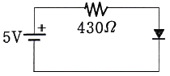
- 2mA
- 3mA
- 5mA
- 10mA
(정답률: 84%)
4. 120V, 60Hz인 사인파가 반파정류기에 공급될 때, 출력주파수는 몇 Hz 인가?
- 0
- 60
- 30
- 120
(정답률: 88%)
5. 증폭기의 출력에서 전압을 샘플링하여 입력단으로 전압을 부귀환할 때 임피던스의 변화로 옳은 것은? (단, 증폭기의 신호원과 출력단은 각각 테브난 증가회로로 나타낸다.)
- 입력임피던스 증가, 출력임피던스 감소
- 입력임피던스 증가, 출력임피던스 증가
- 입력임피던스 감소, 출력임피던스 증가
- 입력임피던스 감소, 출력임피던스 감소
(정답률: 87%)
6. 부하저항 RL=16Ω에 20Vpeak의 신호를 공급한 B급 증폭기의 입력전력 Pi와 출력전력 Po는? (단, 전원전압 VCC=30V이다.)
- Pi = 24W, Po = 13W
- Pi = 34W, Po = 23W
- Pi = 24W, Po = 28W
- Pi = 54W, Po = 43W
(정답률: 67%)
7. 입력 신호 주파수의 변화에 따라 잠기거나 동기화 될 수 있는 전압제어발진기(VCO)를 갖고 있는 회로는?
- 비안정 멀티 바이브레이터
- 단안정 멀티 바이브레이터
- 위상검출기
- PLL
(정답률: 72%)
8. 반전증폭기의 입력 임피던스로 옳은 것은? (단, Zin = 4MΩ, Zout = 75Ω)
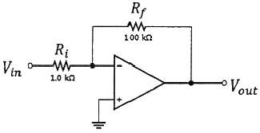
- 1kΩ
- 2MΩ
- 4MΩ
- 5MΩ
(정답률: 69%)
9. 전원 주파수가 60hz를 사용하는 정류회로에서 120Hz의 맥동 주파수를 나타내는 회로는?
- 단상 반파 정류회로
- 단상 전파 정류회로
- 3상 반파 정류회로
- 3상 전파 정류회로
(정답률: 88%)
10. 부귀환 회로의 특징 중 옳은 것은?
- 이득이 감소한다.
- 주파수 대역폭이 좁아진다.
- 왜율이 증가한다.
- 잡음이 증가한다.
(정답률: 72%)
11. 연산증폭기 회로의 출력으로 옳은 것은?
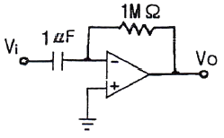
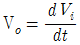
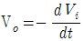
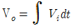
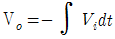
(정답률: 86%)
12. 트랜지스터의 컬렉터 누설전류가 주위 온도변화로 40μA에서 200μA로 증가할 때 컬렉터 전류가 1mA에서 1.8mA로 되었다면 안정도(S)는 약 얼마인가?
- 3
- 5
- 12
- 18
(정답률: 74%)
13. 트랜스 결합 증폭기의 특징이 아닌 것은?
- 증폭기 출력과 부하를 정합시킬 수 있다.
- 트랜스의 1차와 2차의 접지는 독립적이다.
- 주파수 특성이 좋다.
- 대신호 증폭단의 입출력회로에 사용된다.
(정답률: 51%)
14. 디지털 변조가 아닌 것은?
- PM
- ASK
- FSK
- QAM
(정답률: 83%)
15. 가산증폭기의 출력전압은 몇 V 인가?
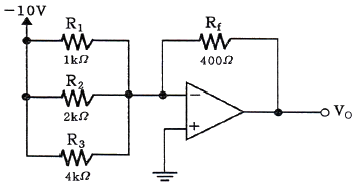
- 7
- -13
- 36.5
- -5.5
(정답률: 80%)
16. 온도에 따라 저항값이 변화하는 센서는?
- 열전대
- CdS
- 서미스터
- 포토다이오드
(정답률: 79%)
17. n-채널 JFET의 IDSS = 16mA, VP = -4V, VGS = -2V일 때 ID는 몇 mA 인가?
- 2
- 4
- 8
- 16
(정답률: 69%)
18. 집적회로(IC) 형태의 3단자 정전압 회로의 특징이 아닌 것은?
- 전력 손실이 높다.
- 회로가 복잡하다.
- 방열 대책이 필요하다.
- 발진 방지용 커패시터가 필요하다.
(정답률: 68%)
19. 펄스 변조방식에 관한 설명 중 틀린 것은?
- 신호 레벨에 따라 펄스의 위상을 변화시키는 것을 PPM이라 한다.
- 신호 레벨에 따라 펄스 수를 변화시키는 것을 PNM이라 한다.
- 신호 레벨에 따라 펄스의 진폭을 변화시키는 것을 PAM이라 한다.
- 신호 레벨에 따라 펄스열의 유무로 2진부호화하는 것을 PWM이라 한다.
(정답률: 84%)
20. BJT와 비교한 FET의 특징에 대한 설명으로 틀린것은?
- 잡음이 적다.
- 열적으로 안정하다.
- 입력 임피던스가 크다.
- 이득대역폭 적이 크다.
(정답률: 69%)
2과목: 전기자기학 및 회로이론
21. 다음 물질 중에서 비유전율이 가장 큰 것은?
- 운모
- 유리
- 고무
- 증류수
(정답률: 80%)
22. 두 종류의 다른 금속 또는 반도체의 양단을 접합하여 폐회로를 만들고 두 개의 접합점 사이에 온도차를 주었을 때 이 회로 내에 열기전력이 생기는 현상은 무엇인가?
- 표피 효과
- 쌍대 효과
- 제벡 효과
- 펠티에 효과
(정답률: 82%)
23. 맥스웰의 방정식 중에서 잘못 표현한 것은?(오류 신고가 접수된 문제입니다. 반드시 정답과 해설을 확인하시기 바랍니다.)
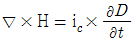
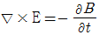
- ▽ · B = 0
- ▽ · D = 0
(정답률: 64%)
24. 전극 간격 d[m], 면적 S[m2], 유저율 ε[F/m]이고 정전용량이 C[F]인 평행판 콘덴서에 e=Emsin wt[V]의 전압을 가할 때의 변위전류[A]는?
- wCEmcos wt
- wCEmsin wt
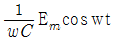
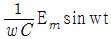
(정답률: 58%)
25. 진공 중에 무한장 직선전하가 단위 길이 당 λ[C/m]로 분포되어 있을 때 전하의 중심축에서 r[m] 떨어진 점의 전계의 크기는?
- 거리에 비례한다.
- 거리에 반비례한다.
- 거리의 제곱에 비례한다.
- 거리의 제곱에 반비례한다.
(정답률: 58%)
26. 권수 500, 단면적 100 cm2의 공심(空心)코일에 전류 1A를 흘릴 때 자계가 1.28 AT/m이었다. 자기인덕턴스는 약 μH 인가?
- 4
- 6
- 8
- 10
(정답률: 43%)
27. 코일에 있어서 자기 인덕턴스는 어떤 매질상수에 비례하는가?
- 저항률
- 유전율
- 투자율
- 도전율
(정답률: 61%)
28. 자속 20Wb가 2초 동안 코일과 쇄교하고 있다. 자속을 제거했을 때 코일의 저항을 통과한 전전하가 10C이라면 저항 R[Ω]은?
- 1
- 2
- 3
- 4
(정답률: 58%)
29. 평형상태에서 도체의 전하분포와 전계에 관한 성질로 옳지 않은 것은?
- 도체 내부에는 전계가 0이 아니다.
- 대전된 도체 표면은 동일 전위에 있다.
- 대전된 도체의 전하는 도체 표면에만 존재한다.
- 대전된 도체 표면의 각 점의 전기력선은 표면에 수직이다.
(정답률: 58%)
30. 두 자성체 경계면에서 정자계가 만족하는 것은?
- 자계의 법선성분이 같다.
- 자속밀도의 접선성분이 같다.
- 자속은 투자율이 작은 자성체에 모인다.
- 양측 경계면상의 두 점간의 자위는 같다.
(정답률: 58%)
31. 그림과 같은 병렬 회로에서 저항 R = 3Ω, 유도성 리액턴스 XL = 4Ω이다. 이 회로의 역률은?
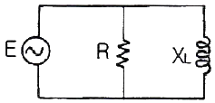
- 0.5
- 0.6
- 0.8
- 0.9
(정답률: 64%)
32. 자기인덕턴스 L1, L2 상호인덕턴스 M인 결합회로의 결합계수가 1일 때, 두 관계를 적절하게 표현한 것은? (단, L1, L2는 두 개 코일의 자기인덕턴스이다.)
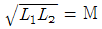
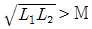
- L1L2 = M
- L1L2 ＜ M2
(정답률: 75%)
33. 그림과 같은 회로의 이력전압(Vi)으로 구형파를 가할 때 출력전압(Vo)의 파형으로 옳은 것은? (단, T≫RC일 경우이다.)
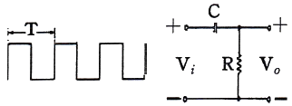
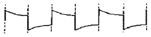
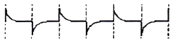
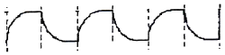
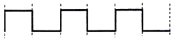
(정답률: 76%)
34. 그림과 같은 RC 회로를 적분회로로 사용하고자 할 때에는 입력 신호의 주기 T와 회로의 시정수 RC 사이에 어떤 조건을 만족하여야 하는가?
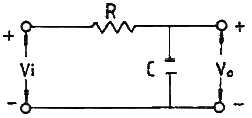
- RC 》T
- RC =T
- RC 《 T
- RC = 0, T = 0
(정답률: 73%)
35. h파라미터(h-parameter)로 표시한 4단자 회로방정식 중 옳은 것은?
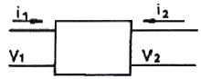
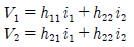
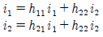
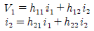
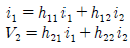
(정답률: 66%)
36. 그림과 같은 회로에서 부하의 다이오드에 전달되는 최대 신호 전력은 몇 mW 인가?
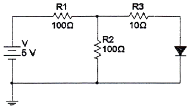
- 14
- 26
- 34
- 48
(정답률: 49%)
37. R=10Ω인 회로에 v = 100
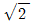
sin(wt+60°)[V]의 전압이 인가되었을 때 회로 전류(I)를 극좌표형식으로 변환하면?- 14.4∠30°
- 14.4∠60°
- 10∠30°
- 10∠60°
(정답률: 62%)
38. 4단자 회로망의 영상 임피던스 Z01과 Z02가 같게 되려면 4단자 정수 사이의 관계로 옳은 것은?
- A=B
- A=C
- A=D
- AB=CD
(정답률: 69%)
39.
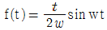
의 라플라스 변환은?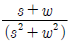
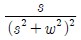
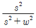
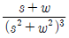
(정답률: 68%)
40. 두 전압
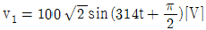
, v2=100 cos314t[V]일 때 관련한 설명으로 틀린것은?- v1 전압의 실효치는 100 V이다.
- v2 의 최대치는 100 V이다.
- 두 전압의 위상차는 0°이다.
- 주파수는 둘 다 314 Hz 이다.
(정답률: 73%)
3과목: 전자계산기일반
41. 중앙처리장치를 구성하는 요소에 해당하지 않는 것은?
- RAM
- Control Unit
- ALU
- Register
(정답률: 69%)
42. 2진수 1010을 그레이 코드(gray code)로 변환하였을 때의 결과는?
- 1010
- 1011
- 1100
- 1111
(정답률: 74%)
43. CPU를 거치지 않고 메모리와 입ㆍ출력장치 사이에서 고속으로 직접 데이터를 전송하는 방식은?
- DMA
- PIO
- SIP
- PIA
(정답률: 83%)
44. 다음 중 제어 버스에 대한 설명으로 옳지 않은 것은?
- 제어 신호 선들의 수는 모든 시스템에 동일
- CPU가 시스템 내의 각종 요소들의 동작을 제어하기 위한 신호 선들의 집합
- 양방향 통신
- 기본적인 제어신호로는 I/O 읽기/쓰기 신호 등이 있다.
(정답률: 62%)
45. 다음 회로를 부울 대수식으로 옳게 나타낸 것은?
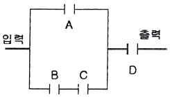
- Z = (A · B + C) · D
- Z = (A + B · C) + D
- Z = (A + B · C) · D
- Z = (A · B + C) + D
(정답률: 71%)
46. 연산장치에서 산술연산회로의 구성요소로 쓰이는 논리 회로는?
- 반감산기
- 전감산기
- 반가산기
- 전가산기
(정답률: 77%)
47. 서브루틴 프로그램(Subroutine Program)을 수행하기 직전에 일어나는 동작이 아닌 것은?
- 서브루틴 시작번지의 내용을 프로그램 카운터에 저장한다.
- 현재 사용 중인 데이터의 내용을 일시적으로 스택에 저장한다.
- 서브루틴 수행 후 돌아와야 할 귀환 주소를 스택에 저장한다.
- 현재 사용 중인 레지스터의 내용을 스택에 저장한다.
(정답률: 54%)
48. 마이크로프로그램에 의해서 CPU를 제작할 때의 장점이 아닌 것은?
- 하드웨어의 결함을 찾아내는데 편리하다.
- 사용하는 논리(logic)의 구조가 규칙적으로 LSI화 하기에 적합하다.
- 프로그램의 내용을 바꾸면 다른 명령도 수행할 수 있으므로 여러 용도에 맞춰 CPU의 기능을 변화시킬 수 있다.
- 제어용 프로그램 작성이 용이하다.
(정답률: 67%)
49. 알고리즘에 대한 설명 중 틀린 것은?
- 알고리즘은 하나 이상의 연산을 필요로 하는 과정들의 유한집합으로 구성된다.
- 알고리즘의 각 연산은 사람이 연필과 종이를 가지고 할 수 있어야 한다.
- 알고리즘은 유한횟수의 작업을 수행한 후 끝나야 한다.
- 알고리즘이 시작되어서 끝나기까지 걸리는 시간은 상관할 바가 아니다.
(정답률: 80%)
50. 2진수의 곱셈시 적용되는 연산 방법은?
- 오른쪽으로의 회전(right rotate)
- 왼쪽으로의 회전(left rotate)
- 오른쪽으로의 자리이동(right shift)
- 왼쪽으로의 자리이동(left shift)
(정답률: 77%)
51. 다음 중 누산기(Accumulator)에 대한 설명으로 옳은 것은?
- 연산명령의 순서를 일시 기억하는 장치이다.
- 연산의 순서와 부호를 일시 기억하는 장치이다.
- 다음에 수행할 명령어의 주소를 기억하는 장치이다.
- 연산 결과를 일시 기억하는 장치이다.
(정답률: 82%)
52. Static RAM에 대한 설명으로 옳지 않은 것은?
- D(Dynamic)RAM과 비교하여 대용량의 구성이 어렵고, 가격도 비싸다.
- 메모리 리플레시(Refresh) 동작이 필요하지 않다.
- Capacitor에 전하를 축적하여 정보를 기억한다.
- DRAM과 비교하여 동작속도가 빠르다.
(정답률: 65%)
53. 1000011의 2의 보수는?
- 0111100
- 0111101
- 1000101
- 1001111
(정답률: 78%)
54. 명령(instruction)의 형식에 있어서 연산수(주소의 개수)에 의한 분류시 해당되지 않는 것은?
- 1 주소 명령
- 2 주소 명령
- 3 주소 명령
- 4 주소 명령
(정답률: 78%)
55. 컴퓨터의 직렬 입ㆍ출력 인터페이스가 아닌 것은?
- USART
- ACIA
- SIO
- PPI
(정답률: 73%)
56. 데이터가 발생되면 곧바로 계산이나 기록의 갱신을 행하므로 즉시 데이터 처리를 할 수 있는 방식은?
- 오프라인 시스템에 의한 일괄처리
- 온라인 리얼 타임 시스템에 의한 방식
- 리모트 Job 입력 시스템 방식
- 데이터 수집 시스템에 의한 일괄처리 방식
(정답률: 77%)
57. 마이크로컴퓨터의 입·출력 구성 요소가 아닌것은?
- 입·출력 인터페이스
- 입·출력 포트(port)
- 버스
- 디코더
(정답률: 66%)
58. 마이크로프로세서 구성 요소들을 기능별로 분류한 것에 대한 설명으로 옳지 않은 것은?
- ROM, RAM은 반드시 별도의 칩으로 구성해야 한다.
- 마이크로프로세서 칩은 중앙처리장치와 동등한 역할을 한다.
- ROM, RAM 칩은 필요에 따라 적절한 기억장소의 크기를 선택할 수 있다.
- 인터페이스는 CPU와 많은 종류의 입출력 장치들과의 접속을 수행한다.
(정답률: 76%)
59. 다음은 어떤 논리를 카르노 맵(Karnaugh map)으로 나타낸 것이다. 간략화된 논리식을 구현하는데 요구되는 논리 소자는?
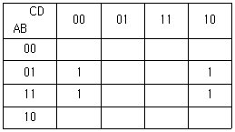
- AND, NOT
- OR, NOT
- NAND
- NOR
(정답률: 71%)
60. CPU에서 주기억 장치로부터 다음에 인출할 명령어의 주소를 가지고 있는 레지스터를 무엇이라고 하는가?
- 프로그램 카운터
- 명령어 레지스터
- 기억장치 주소 레지스터
- 입출력 주소 레지스터
(정답률: 78%)
4과목: 전자계측
61. 직류전류계를 회로 중에 삽입하여 회로에 흐르고 있는 전류를 측정하고자 한다. 이때, 사용되는 직류전류계는 다음 중 어떠한 조건을 만족하여야 하는가?
- 내부저항이 가급적 클수록 좋다.
- 계기의 측정 오차범위가 지정되어 있으므로 내부저항의 대소는 별로 상관이 없다.
- 직류만 측정하면 되므로 전류계의 내부정전용량은 크더라도 상관이 없다.
- 내부저항이 가급적 작을수록 좋다.
(정답률: 60%)
62. 수신기의 입력전압 40 μV, 출력전압이 4V 일 때 감도는 얼마인가?
- 80[dB]
- 90[dB]
- 100[dB]
- 110[dB]
(정답률: 73%)
63. 오실로스코프의 구성요소 중 하나로 톱니파가 발생하는 장치로서 수평 편향판에 톱니파 신호를 입력시켜 화면상의 밝은 점을 수평축 방향으로 동기를 맞추는 것은?
- 스위프 발진기
- 수직 증폭기
- 수평 증폭부
- 동기신호 발생기
(정답률: 65%)
64. 그림과 같이 전압계와 전류계를 접속하여 부하 전력을 측정할 때 각 계기의 지시가 100V 와 2A였다. 전류계의 내부 저항이 0.2Ω이라면 부하전력은 얼마인가?
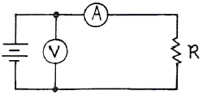
- 196.6W
- 199.2W
- 187.2W
- 200.3W
(정답률: 72%)
65. 어떤 정보를 가지고 있는 신호라 할지라도 그 정보가 아니거나 원하는 정보 신호의 형태를 일그러뜨리거나 세기를 변화시키는 것은?
- 음압
- 감도
- 잡음
- 증폭
(정답률: 79%)
66. 발진 주파수가 대략 500 MHz의 극초단파 발진기가 있다. 레헤르선의 발진주파수에 따른 파장은? (단, 공기 중 빛의 속도는 3×108[m/s]이다.)
- 0.3m
- 0.6m
- 6m
- 3m
(정답률: 70%)
67. 오실로스코프에서 수직축과 수평축에 주파수와 진폭이 같고 위상이 90° 다른 전압을 가하면 리사주 도형(Lissajous figure)은 어떻게 되는가?
- 타원
- 직선
- 원
- 포물선
(정답률: 80%)
68. 회로 내에서의 두 점에서 신호의 진폭과 위상차를 측정하는 것으로 증폭기의 이득과 위상천이, 4단자망 파라미터 등의 측정에 사용되는 계기는?
- 벡터 전압계
- Q 미터
- 차동 전압계
- 적산 전력계
(정답률: 64%)
69. 스트로보스코프(stroboscope)로 측정할 수 있는 것은?
- 전류
- 조도
- 전압
- 회전수
(정답률: 75%)
70. 열전형 계기의 표피 오차 방지책으로 옳은 것은?
- 고주파를 사용
- 미소전류 사용
- 미세열선 사용
- 초크코일 사용
(정답률: 79%)
71. 임의의 어떤 교류 증폭기의 주파수 대역을 오실로스코프와 조합해서 측정하고자 한다. 어떤형의 발생기를 사용해야 하는가?
- 소인 신호 발생기(Sweep Generator)
- AM 신호 발생기(AM Signal Generator)
- FM 신호 발생기(FM Signal Generator)
- Pulse 신호 발생기(Pulse Generator)
(정답률: 77%)
72. 가동철편형 계기에서 구동 토크(TD)와 전류(I)의 관계는?
 에 비례한다.
에 비례한다. 에 비례한다.
에 비례한다.- I2에 비례한다.
- I4에 비례한다.
(정답률: 82%)
73. 계수형 주파수계의 확도(Accuracy)에 영향을 주는 것은?
- 기준 클럭 발진기
- 게이트 회로
- 지시관의 특성
- 전원 전압의 변동
(정답률: 55%)
74. 최대눈금 100 mA, 내부저항 10 Ω인 전류계를 0.6 A까지 확대 측정하려고 할 때 분류기의 저항값은 몇 Ω 인가?
- 1
- 2
- 9
- 10
(정답률: 54%)
75. 저주파 증폭기의 이득 측정과 관계가 없는 것은?
- 저주파 발진기
- 감쇠기(ATT)
- 표준신호발생기(SSG)
- 저역 여파기(LPF)
(정답률: 63%)
76. 미소직류전류를 측정하는 경우 열기전력의 발생에 따른 오차를 줄이기 위한 방법은?
- 전류 인출선 주위에 영구자석과 같은 자계가 있어서는 안된다.
- 계기를 정전차폐(shield)할 필요가 있다.
- 전계기 접속 부분의 온도를 일정하게 한 다음 측정한다.
- 지구 자장에 민감하므로 주위해야 한다.
(정답률: 65%)
77. 비교적 구조가 간단하고 분류기 없이 큰 전류까지 측정할 수 있으나 오차가 많아서 직류보다는 주로 교류 전용 측정 계기로 사용되는 계기는?
- 가동 철편형
- 가동 코일형
- 유도형
- 전류력계형
(정답률: 56%)
78. 다음은 진폭변조 회로의 출력을 오실로스코프로 측정한 결과이다. a=3b이면 변조율은 몇 % 인가?
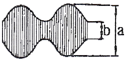
- 25
- 50
- 75
- 100
(정답률: 76%)
79. 1Ω 이하에서 10-5Ω 정도까지의 저저항 정밀측정에 사용되는 방법은?
- 켈빈더블 브리지법
- 휘트스톤 브리지법
- 전압계법
- 직접편위법
(정답률: 76%)
80. 휘트스톤 브리지로 측정할 수 있는 것은?
- 전류
- 저항
- 커패시턴스
- 인덕턴스
(정답률: 67%)